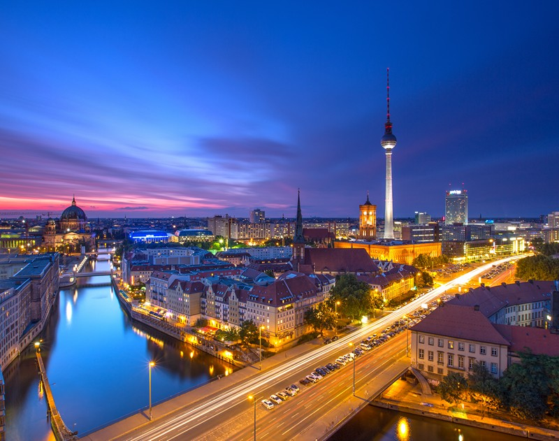
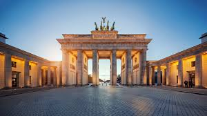
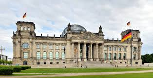

Βερολίνο
Το Βερολίνο είναι η πρωτεύουσα και η μεγαλύτερη σε έκταση και πληθυσμό πόλη της Γερμανίας. Ως προς τον πληθυσμό είναι η δεύτερη μεγαλύτερη πόλη της Ευρωπαϊκής Ένωσης. Επίσης η πόλη του Βερολίνου αποτελεί και κρατίδιο της γερμανικής ομοσπονδίας. Στην ιστορία του το Βερολίνο ήταν πρωτεύουσα διάφορων κρατών, όπως της Μαρκιωνίας του Βρανδεμβούργου, του Βασιλείου της Πρωσίας, της Γερμανικής Αυτοκρατορίας,του Γ΄Ράιχ και της Λαϊκής Δημοκρατίας της Γερμανίας.Στις 3 Οκτωβρίου 1990 έγινε με την επανένωση των δυο γερμανικών κρατών πρωτεύουσα της ενοποιημένης Ομοσπονδιακής Δημοκρατίας της Γερμανίας και αντικατέστησε έτσι την μέχρι τότε πρωτεύουσα, τη Βόννη.Το γερμανικό κοινοβούλιο, που μέχρι τότε εξακολουθούσε να εδρεύει στη Βόννη, αποφάσισε το 1991 να μεταφερθεί στο Βερολίνο. Η μετακίνηση της βουλής από τη Βόννη στο Ράιχσταγκ του Βερολίνου πραγματοποιήθηκε το 1999. Η πόλη αποτελεί σημαντικό κόμβο συγκοινωνιών όπως και οικονομικό και πολιτισμικό κέντρο με πολυάριθμα πανεπιστήμια, ερευνητικά ιδρύματα, θέατρα, μουσεία και αρχιτεκτονικά μνημεία.
Σήμερα στο Βερολίνο ζουν περίπου 3,4 εκατομμύρια άνθρωποι. Στα μέσα του 17ου αιώνα το Βερολίνο ήταν αραιοκατοικημένο, κάτι που οφειλόταν στον τριακονταετή πόλεμο. Από τότε, όμως, που την εξουσία ανέλαβε ο Μέγας Εκλέκτορας του Βρανδεμβούργου Φρειδερίκος Γουλιέλμος το 1640, άσκησε μεταναστευτική πολιτική και έφερε πολλούς Ουγενότους από τη Γαλλία. Έτσι, ενώ το 1648 η πόλη είχε μόνο 6.000 κατοίκους, το 1709 είχε 57.000. Ο πληθυσμός συνέχισε να αυξάνεται, και το 1875 ξεπέρασε το 1 εκατομμύριο. Το 1920 ο πληθυσμός έφτασε τα 4 εκατομμύρια, μετά τον Β' παγκόσμιο πόλεμο, όμως, υποχώρησε στα 3,1 εκατομμύρια.
| Brandenburger Gate | Reichstag Building | Photo Gallery |
|---|---|---|
| Neoclassical monument | Historic edifice |  |
| Pariser Platz, 10117 Berlin, Germany | Platz der Republik 1, 11011 Berlin, Germany | |
| 24 hours open | 8AM-12AM |  |
| built in 1788 | built in 1884 |
Berlin-Shortfilm
Best bars in Berlin!
Click the button to sort the list alphabetically:
- Newton Bar
- Schwarze Traube
- Booze Bar Berlin
- Cafe Cinema
- Monkey Bar
- Reingold